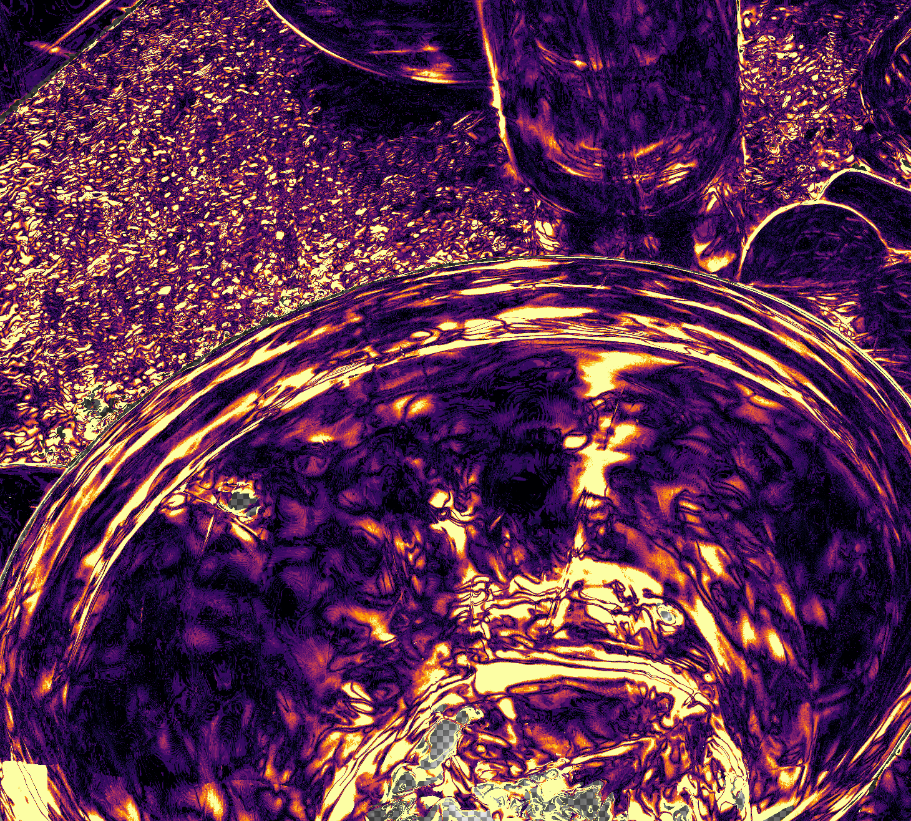
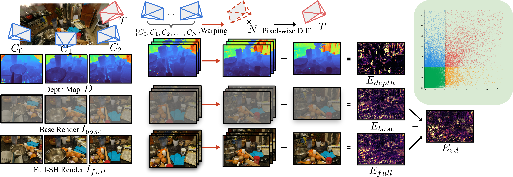
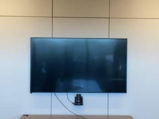
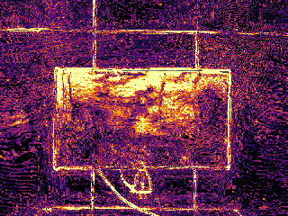
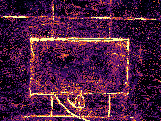
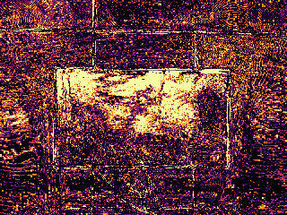
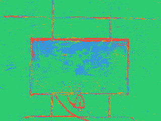
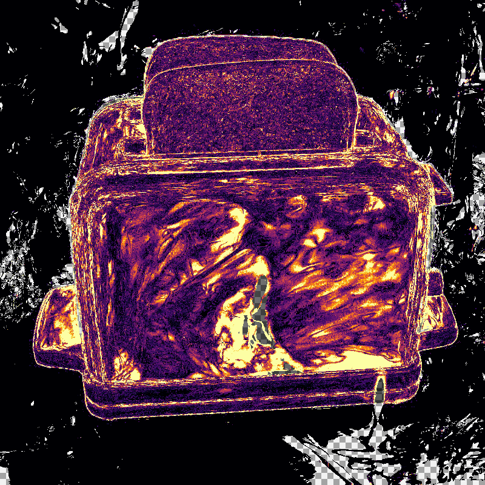
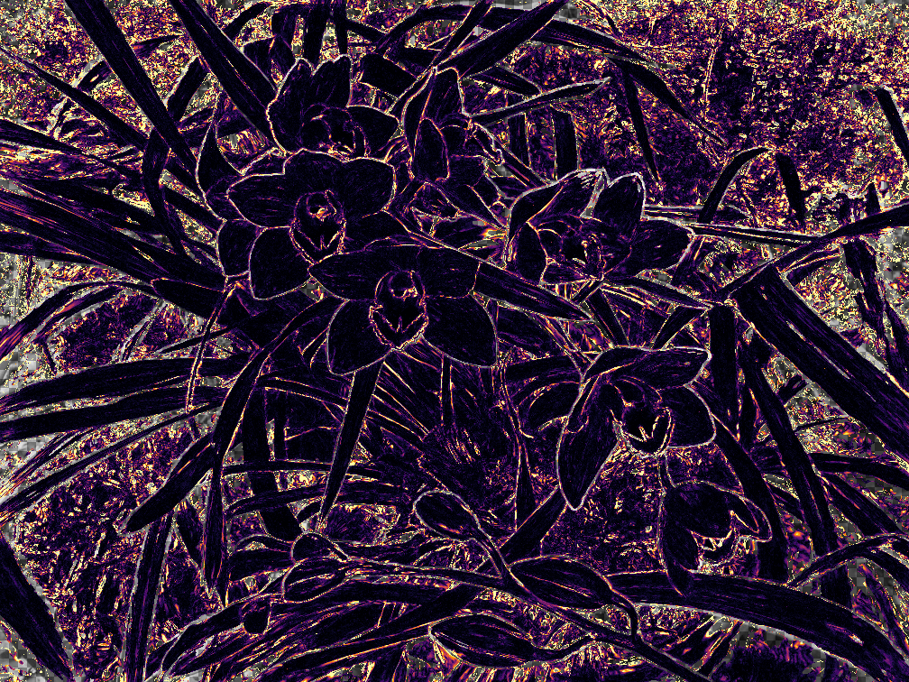

Counter
E_full
E_baseE_vdDecoupled Reprojection Consistency (DRC) is a training-free diagnostic for 3D Gaussian Splatting. Instead of treating reprojection inconsistency as a single ambiguous error map, DRC separates it into interpretable signals for geometry or visibility mismatch, base photometric inconsistency under SH truncation, and a view-dependent residual. Combined with photometric coverage and quadrant labeling, this turns reprojection consistency into actionable per-pixel triage for debugging.
One reprojection map mixes structural failures and view-dependent behavior, so high error alone is hard to debug.
Compare a base SH render and a full SH render from the same trained 3DGS, without retraining or external supervision.
Coverage-aware quadrant labels make failure patterns easier to interpret than a single heatmap.
DRC keeps the standard reprojection setup but replaces one scalar error reading with a small family of internal diagnostics.

A source view is warped into a target view to measure reprojection consistency at
the pixel level. This provides the common baseline quantity E_full, but
by itself it does not explain why a region is inconsistent.
We evaluate the same trained model under SH truncation and compare the base render
to the full render. This yields E_base and the view-dependent residual
E_vd. Importantly, L=0 here is only a diagnostic SH
truncation, not a physical intrinsic decomposition such as diffuse or albedo.
DRC also reports photometric coverage and normalized quadrant occupancy. Together, these indicate whether the signal is reliably observed and whether the dominant behavior looks consistent, geometry or visibility-like, appearance-driven, or unusual enough to merit deeper inspection.
Hover or drag across each figure to compare two views of the same scene.
RGB vs quadrant overlay
E_full vs E_vd
RGB vs quadrant overlay
E_full vs E_vd
RGB vs quadrant overlay compares the observed image with DRC spatial triage in image space. E_full vs E_vd contrasts the ambiguous single-map inconsistency against the view-dependent residual.
Representative scene summaries across Counter, Room, Toaster, and Orchids.
E_full
E_baseE_vd

E_full
E_base
E_vd
E_full
E_baseE_vdE_full
E_baseE_vd| Scene (N) | C_photo |
Cons. | Geo | App | Dbg |
|---|---|---|---|---|---|
| M360/counter (216) | 0.947 | 85.8 | 5.8 | 6.1 | 2.2 |
| LLFF/room (37) | 0.967 | 85.1 | 5.0 | 8.1 | 1.8 |
| Syn/toaster (100) | 0.854 | 85.0 | 5.0 | 8.2 | 1.8 |
| LLFF/orchids (23) | 0.852 | 87.7 | 7.7 | 3.1 | 1.4 |
Coverage remains reasonably high across all four scenes. The appearance-driven fraction is higher for Room and Toaster than for Orchids, matching the expectation that glossier scenes generate stronger view-dependent residuals.
DRC is intended as a lightweight diagnostic rather than a ground-truth classifier, and
L=0 should be read as a diagnostic SH truncation, not a physical intrinsic decomposition.
If you find this diagnostic useful, please cite the Eurographics 2026 poster version:
@inproceedings{park2026drc,
author = {Park, Jin-Hyeong},
title = {Decoupled Reprojection Consistency for Diagnosing 3D Gaussian Splatting Failures},
booktitle = {Eurographics 2026 Posters},
year = {2026}
}